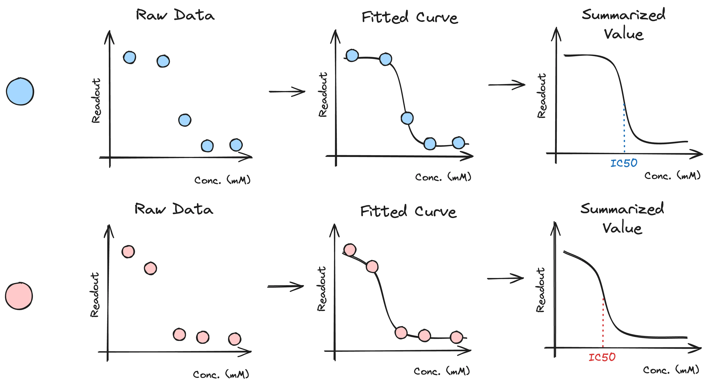

Eric J Ma's Website
written by Eric J. Ma on 2024-02-18 | tags: data science machine learning data engineering python packages chemical screening predictive models data curation
This may be something obvious to some but not others: Dashboard-ready data is often machine-learning-ready data.
Dashboards, in my experience, are the place where data science projects go to die, and that's why the DSAI teams at Moderna generally don't build UIs or dashboards but instead have a laser focus on delivering CLI tools that can be run on the cloud, or Python packages. But one thing recently became clear: the data that might power a dashboard is often ML-ready data.
Here's an example from my past life: a chemical screening campaign. For a team embarking on a campaign, it would be nice to know the lead molecules within a campaign and how they stack up against all of the other molecules tested in the same campaign. We'd usually collect extremely raw assay data, ideally with replicates but sometimes without. We may collect a dose-response curve, for which the IC50 value needs to be quantified. As such, we first need to transform that raw measurement data into IC50s by fitting them through a dose-response curve. The process looks like this for two molecules, one blue and one red.

But now, we have a table that can be made with the following schema:
- Molecule: a SMILES string that can be parsed in RDKit and
- IC50 (in nM units): the quantitatively measured IC50 value according to the assay.
| Molecule | IC50 (nM) |
|---|---|
| A | 25.2 |
| B | 31.3 |
| C | 10.8 |
| D | 28.7 |
One could use that data table to build a dashboard; at the same time, that data is also ML model-ready! From here, we can build Quantitative Structure-Activity Relationship models that can be used to prioritize new molecules to study. It's no secret that modern QSAR models are often machine learning models, but their underlying foundation is the same as dashboard-ready data: molecule-property mappings.
But why?
Why would dashboard-ready data often be ML-ready data?
From a statistical perspective, ML models of the predictive flavour operate on summarized data. Dashboards also often need summarized data, as opposed to un-summarized data.
From a business perspective, dashboards are built to support business decisions. Machine learning models are often built with business decision support in mind, which is why they, in practice, also use the same data as dashboard-ready data.
So, whether we are curating datasets for dashboarding or machine learning purposes, keep in mind that there is a very high likelihood that the same data can be used for both.
I send out a newsletter with tips and tools for data scientists. Come check it out at Substack.
If you would like to sponsor the coffee that goes into making my posts, please consider GitHub Sponsors!
Finally, I do free 30-minute GenAI strategy calls for organizations who are seeking guidance on how to best leverage this technology. Consider booking a call on Calendly if you're interested!